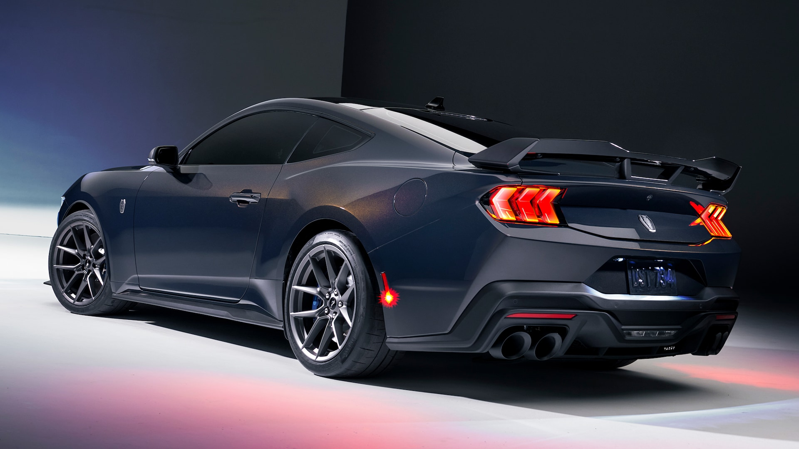
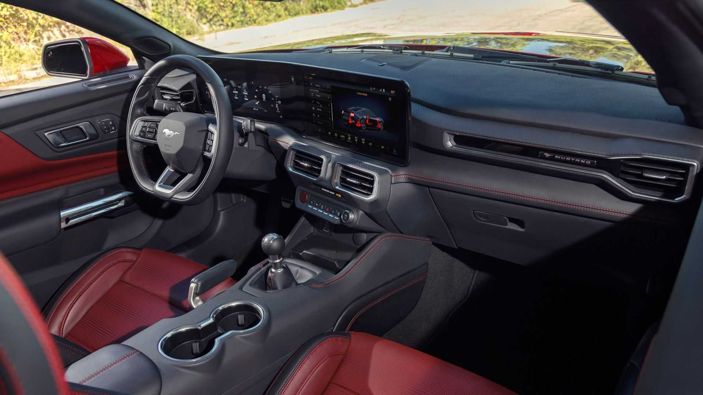

Ford launched the seventh generation of Mustangs with reworked-but-familiar styling, revised chassis hardware, an all-new interior, and two revised and improved engines. While Ford continues to produce new ponies, its competitors the Chevy
Camaro and Dodge Challenger are not going to be soon. This leaves the Mustang to be soon the last gas-combustion muscle car.
Engine & Transmission Options
The new generation sports cars will continue to be powered by an updated 5.0-liter V-8 and turbocharged 2.3-liter EcoBoost engine. Ford has not told us the exact horsepower each powertrain will have, but that the new 5.0-liter V-8 will have
480 plus horsepower and the 2.3-liter EcoBoost will be making 310 plus horsepower. The GT and Dark Horse models will have dual air intakes feeding to dual throttle bodies, giving the engines more air to breathe in. This is probably where
they got the extra power Ford is saying they gained with those models. Ford ensured that the manual lives by having a Getrag six-speed manual for the GT and a standard Tremec six-speed manual for the Dark Horse. Both the GT and the Dark
Horse models have the option to get the famous 10-speed automatic.

Exterior Changes
The S650 Mustang features a sharp, engraved, and streamlined design. This is all enhanced by the steeper windshield, long hood, and flatter front end. The sides and the front looks are not hugely changed compared to the S550, but the rear
end is completely different, it has a sharper and more aggressive shape, which looks more modernized. One of the biggest changes from the front is the slimmer headlights that look similar to the Mustang Mache, Fords crossover version of the
Mustang.

Interior Changes
The interior is the hugest change to many people if you compare the interior of the S550 and the new S650. The new Mustang's interior is getting a massive new dash cluster with lots of new technology. The interior looks like an immersive
digital cockpit, while the digital instrument cluster in the S650 Mustang is similar to the S550's digital dash cluster, it's far from the same. S650 Mustang now comes with a new 12.4" instrument cluster which then blends seamlessly into
the 13.2" center console with a piece of glass. Before in the S550s, you could get a digital dash in the Premium Plus Package or as the standard on the higher trim levels, but now the digital cluster will be standard on all S650 Mustangs.
Another change to the interior is the flat-bottom steering wheel, which leaves more room for someone to enter and get in the vehicle. The hand brake has also been changed, it is now an electronic drift brake that was co-developed with
Vaughn Gittin Jr. He is commonly known as JR, and an American, self-taught, professional drifter from Maryland. Vaughn competes with a modified Mustang by RTR and is sponsored by Monster Energy. A traditional handbrake does not stay up when
engaged, while the new electric brake acts more like a hydraulic handbrake in a drift car. The electric brake acts like this only when it's in drift mode, when it's not, it goes back to regular hand brake.
Click here to see the Pre-order page